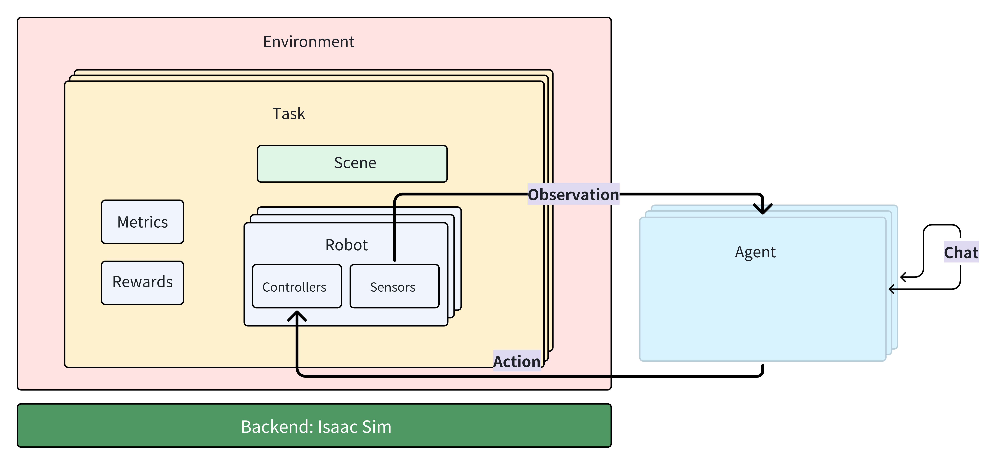

How To Run Benchmark With Custom Agent#
Background#
Currently, GRUtopia supports benchmark for social navigation and mobile manipulation.
You can download the dataset for both social navigation and mobile manipulation tasks by referring to this doc.
System Requirements#
NVIDIA’s RTX-supported GPU
GPU memory should be greater than 16G
To run the entire benchmark, you will need at least 400GB of hard disk space (SSD is required)
32GB of RAM is required.
Note: We’ve tested our benchmarks on RTX 4090, and you can take it as a spec reference.
Datasets#
Introduction for Mobile Manipulation Dataset#
Here is a brief introduction for some files in the datasets:
benchmark/meta/{scene_id}/annotation.json: Polygons of room regions
benchmark/mm_episodes.json: episodes for mobile manipulation task
benchmark/meta/{scene_id}/paths.json: ground truth path to specific object from start point
Agent#
In GRUtopia, Agent is defined as the “brain” that receives observation and outputs action to control the robot’s movement. It has the following features
Robot is not Agent
Agent only interacts with the environment through Robot
If there are multiple Agents, the interaction between Agents must be implemented separately outside GRUtopia (such as online chat)

The GRUtopia framework does not define an Agent base class. You can create your own Agent in any form. You can also consider the following paradigm
Take demo/h1_locomation.py as an example. If you want to use an Agent to control the robot, you can consider making the following changes
...
# The module import part and the config and runtime definition parts are omitted above.
env = Env(sim_runtime)
obs, _ = env.reset()
# print(f'========INIT OBS{obs}=============')
path = [(1.0, 0.0, 0.0), (1.0, 1.0, 0.0), (3.0, 4.0, 0.0)]
i = 0
- move_action = {move_along_path_cfg.name: [path]}
+
import YouAgent
+ agent = YouAgent(you_agent_config)
while env.simulation_app.is_running():
i += 1
action = move_action
action = agent.step(obs)
obs, _, terminated, _, _ = env.step(action=action)
if i % 500 == 0:
print(i)
# print(obs)
env.simulation_app.close()
Agent Interface#
As mentioned above, the use of an agent primarily involves computing the action based on the observation (obs), so it is necessary to know the formats of both the observation and the action.
To use Mobile Manipulation Benchmark#
the obs format received by your agent is as follows
# python dict structure
{
"position": [ np.ndarray, 2D, 3 elements, XYZ ],
"orientation": [ np.ndarray, 2D, 4 elements, Quaternions ],
...
"sensors": {
"camera": {
"bounding_box_2d_tight": {
...
},
"landmarks": [],
"rgba": array([[]], dtype=uint8),
"depth": array([[]], dtype=float32),
"camera_params": {
...
},
"pointcloud": array([[]])
},
"tp_camera": {
...
},
"render": False
}
the action should return from agent is as follows
# Not every key needs to be returned, only the used keys are returned
{
'h1': {
'move_along_path': [[(1, 1, 1), (1, 2, 1)]],
'rotate': [[Quaternions]],
'terminate': False,
'right_arm_ik_controller_cfg': [[3d_point]],
}
}
Among them:
move_along_pathis to move along the point, input is the list in the examplerotateis to rotate, input is quaternionterminatemeans the end instruction returned by the agent when it thinks the task has been completed, bool
Step#
If necessary, start the agent service first (if your agent is implemented as a service call).
Generate the execution script for the episodes.
Run the execution script on any server that can run GRUtopia and has the assets downloaded. The only part that might be challenging is generating the execution script for the episodes.
Generating Episodes#
# It is recommended to execute this script at the root directory of the project.
python grutopia_extension.agents.social_navigation_agent.generate_sn_episodes.py --help
# or
python grutopia_extension.agents.mobile_manipulation_agent.generate_mm_episodes.py --help
You can learn how to use this episode generator by checking its help documentation.